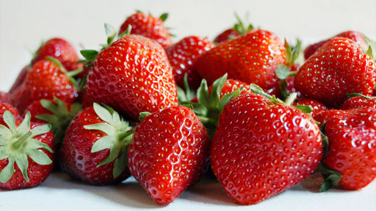
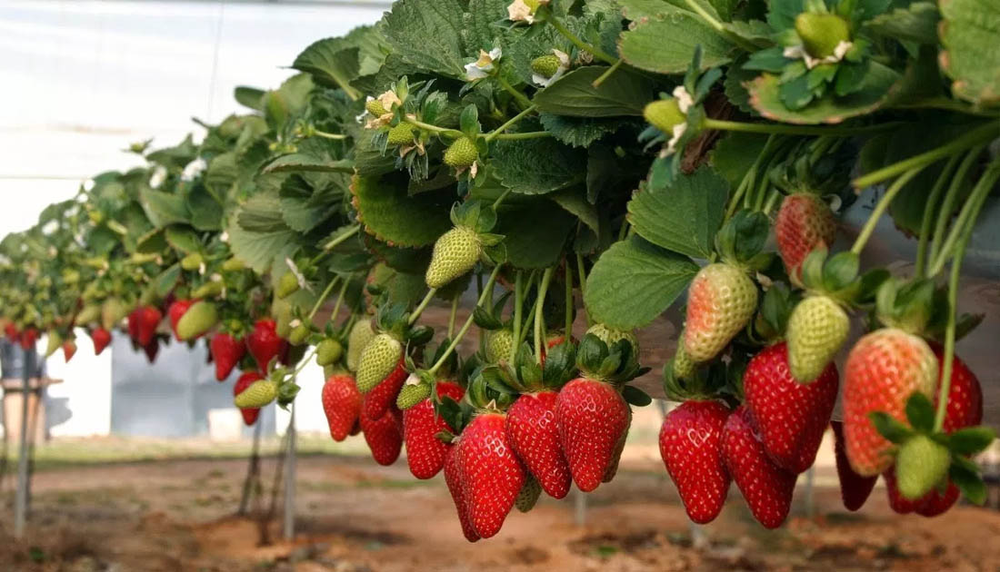

LAS FRESAS DEL HUERTO

Las fresas y los fresones de España gozan de merecida fama. Las principales zonas de cultivo se encuentran en Huelva y en el Maresme barcelonés, aunque también Extremadura y Valencia son grandes productores.
La cultivación
1-La fresa no encuentra problemas de adaptación con respecto a la temperatura. Es una planta que se ve bastante condicionada por la temperatura, a la hora de engrosar sus frutos y mejorar sus características organolépticas. Los valores óptimos de temperatura se sitúan entre los 15-20 ºC
2-La intensidad o influencia de la luz es importante en el desarrollo de la planta, en cuanto a la proporción de azúcares en el cultivo. Suele necesitar alrededor de 12 horas de luz para conseguir una buena producción.
3-Se adapta a gran variedad de terrenos. Las necesidades son parecidas a las de muchas otras hortalizas. Requiere suelos bien drenados, profundos (hasta 40 cm) y alto contenido en materia orgánica.
4-En el cultivo de fresas se requiere contenidos altos en humedad. Con la aplicación de fertilizantes se requieren riegos prácticamente diarios, manteniendo una conveniente humedad en el suelo (evitar encharcamientos). Es importante controlar la calidad de riego, puesto que la fresa es poco tolerante a la salinidad y sensible a altas concentraciones de cloro (quemaduras en el borde de hojas adultas).
Cuidado con los excesos, pues perjudicará a la producción y puede llegar a pudrir la planta.
5-Hay que tener cuidado ya que en la cultivacion de estas pueden exisistir plagas de algunos insectos:
* Araña roja (Tetranychus urticae)
* Trips (Frankliella occidentalis)
*Pulgón (Aphys gossypii y Myzus persicae)
* Orugas (Spodoptera exigua)

Propiedades medicinales
+ Como tiene una buena cantidad de ácido ascórbico, el consumo de fresa está indicado para reducir el colesterol.
+ La cocción de las hojas tomadas como infusión es un buen remedio contra la diarrea, por su capacidad astringente.
Ahora os ponemos el enlace de nuestro colegio para que entreis y veais nuestro proceso en el huerto.
Enlace a la web del colegio siglo xxi
Enlace a la pagina de las fresas
Receta de chesecake de fresa
Ingredientes para preparar el Cheesecake de Fresa:
2 tazas de galleta de vainilla molida
1/2 taza de mantequilla derretida
2 paquetes de queso crema (por 227 gr. cada uno)
1 lata de LECHE CONDENSADA
Jugo de 3 limones
1 cucharadita de esencia de vainilla
1 taza de mermelada de fresa
PREPARACIÓN: